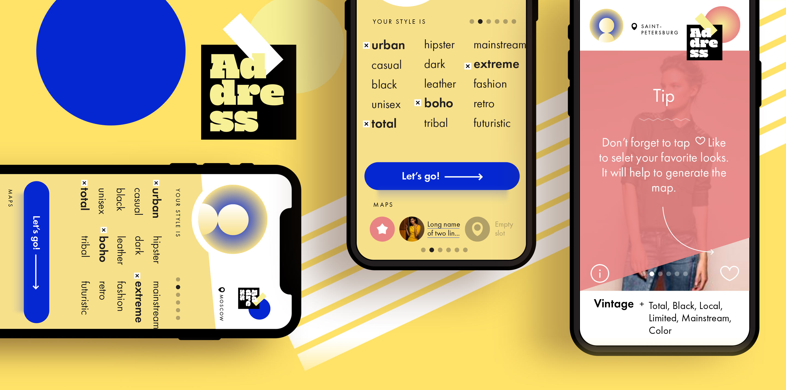

Тот самый случай, когда заказчик оказывает смелее и безрассуднее дизайнера. И тут мы все от души повеселились. Особенно с палитрой.
Логотип и вариации безумной и прекрасной палитры:

Несколько экранов приложения


Марина Горбунова
Co-Founder @ Address App
Co-Founder @ Address App
Часто бывает, что на уровне эмоций ты знаешь, что хочешь в результате, но понятия не имеешь, как это передать словами или графически. Саша умеет выслушать, направить и найти решение. Вдруг ты видишь, что твоя идея приобрела смысл, очертания, цвет, стиль и вызывает именно те эмоции, которые и задумывались. А еще Саша видит то, что не видишь ты, поэтому порой ответы приходят раньше, чем вопросы. Мы очень довольны результатом!